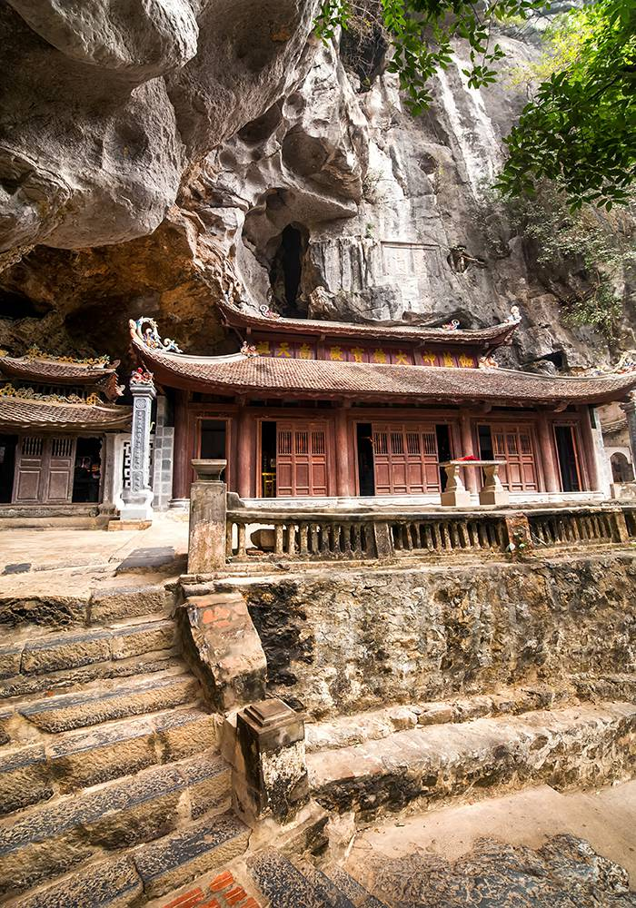

Tonkin bugten
Udforsk Tonkin bugten til lands og til vands.
NordVietnam holder på en masse godt gemte rejseoplevelser som udfolder sig bedst når man kommer rigtig ud i omgivelserne.
Tonkin bugten byder på en broget historie, fantastisk naturskøhend samt UNESCO Verdensarven; Halong Bay, på samme tid
Vi starter i hovedstaden Hanoi, før vi sætter os på mountainbikes og sætter kursen ud på en 2 dages ekspedition gennem rismarker, lokalsamfund og rå skøn natur.
På cykel gennem rismarker i Ninh Binh provisen til en flydende landsby som har en sjov unik tradition at ro deres både med fødderne.
Efter 2 fantastiske dage på cykel fuldendens turen med et overnatcruise i Halong Bay hvor alle sanseindtryk samles til en komplet NordVietnam oplevelse.
HANOI
I Hanoi udforsker vi de spændende seværdigheder til pulsen i den livlige by.
Vi læner os tilbage i en traditionel Cyclo ( rickshaw ) gennem de snævre gader i det charmerende gamle kvarter.
Besøg til litteraturens tempel, ‘Hanoi Hilton’, B52 søen, Vanddukker og meget mere.
NINH BINH PROVINSEN
VAN LONG NATURRESERVAT
To dage på mountainbike gennem et naturreservat, landsbyer og fantastisk landskab med overnatning i Ninh Binh.
HOA LU AND TAM COC
Et skridt tilbage i vietnamesisk tid i Hoa Lu, – den gamle hovedstad i det 10. århundrede.
Tam Coc er også kendt som Halong bugten på land.
TONKIN
HALONG BUGTEN
Når vi bevæger os ind i Tonkin, efterlader vi vores mountainbikes for at fortsætte til vands i en klassisk Junk,
I Halong bugten’s magiske verden krydser vi i naturens vidunder på et 2 dages krydstogt.
NordVietnam holder på en masse godt gemte rejseoplevelser som udfolder sig bedst når man kommer rigtig ud i omgivelserne.
Tonkin bugten byder på en broget historie, fantastisk naturskøhend samt UNESCO Verdensarven; Halong Bay, på samme tid
Vi starter i hovedstaden Hanoi, før vi sætter os på mountainbikes og sætter kursen ud på en 2 dages ekspedition gennem rismarker, lokalsamfund og rå skøn natur.
På cykel gennem rismarker i Ninh Binh provisen til en flydende landsby som har en sjov unik tradition at ro deres både med fødderne.
Efter 2 fantastiske dage på cykel fuldendens turen med et overnatcruise i Halong Bay hvor alle sanseindtryk samles til en komplet NordVietnam oplevelse.
HANOI
I Hanoi udforsker vi de spændende seværdigheder til pulsen i den livlige by.
Vi læner os tilbage i en traditionel Cyclo ( rickshaw ) gennem de snævre gader i det charmerende gamle kvarter.
Besøg til litteraturens tempel, ‘Hanoi Hilton’, B52 søen, Vanddukker og meget mere.
NINH BINH PROVINSEN
VAN LONG NATURRESERVAT
To dage på mountainbike gennem et naturreservat, landsbyer og fantastisk landskab med overnatning i Ninh Binh.
HOA LU AND TAM COC
Et skridt tilbage i vietnamesisk tid i Hoa Lu, – den gamle hovedstad i det 10. århundrede.
Tam Coc er også kendt som Halong bugten på land.
TONKIN
HALONG BUGTEN
Når vi bevæger os ind i Tonkin, efterlader vi vores mountainbikes for at fortsætte til vands i en klassisk Junk,
I Halong bugten’s magiske verden krydser vi i naturens vidunder på et 2 dages krydstogt.


Turen i overblik
7 dage / 6 nætter
2 cykledage
HANOI | NINH BINH | HALONG BUGTEN
| Destination | Land | Nætter | Cykledage |
|---|---|---|---|
| Hanoi | Vietnam | 2 | 0 |
| Ninh Binh | Vietnam | 2 | 2 |
| Halong Bay | Vietnam | 1 | 0 |
| Hanoi | Vietnam | 1 | 0 |
{kind=link}
Halong bugten
En UNESCO verdensarv.
Rute og højdepunkter

| Dag 1 | København | Mellemlanding i Bangkok |
| Dag 2 | Hanoi | Ankomt og transfer til hotellet. |
| Dag 3 | Hanoi | Fuld dags byrundtur |
| Dag 4 | Ninh Binh | På cykel. Van Long reservatet og Kenh Ga, flydende landsby |
| Dag 5 | Ninh Binh | På cykel. Den gamle hovedstad Hoa Lu og Tam Coc, Halong Bay på land. |
| Dag 6 | Halong Bay | Halong Bay overnat cruise |
| Dag 7 | Halong Bay - Hanoi | Efter endt cruise, transport retur til Hanoi |
| Dag 8 | Hanoi | Afrejse, måske forsæt til en lækker strand i enten Vietnam eller Thailand Flyskifte i Bangkok med mulighed for et par strandage i Hus Hin. |
| Dag 9 | København | Ankomst. |
Program
Dag 1:
Afrejse fra København
Afrejse fra København
Flyrejse fra København med mellemlanding.
Dag 2:
Ankomst til Hanoi
Ankomst til Hanoi
Du bliver mødt i Noi Bai lufthavn med et stort smil og en transport til hotellet.
Resten af dagen er til egen disposition
Hotel 1 (4*): Chalcedony Hotel
Hotel 2 (3*): Lenid Hotel Tho Nhuom Link
Transport: 40km
Resten af dagen er til egen disposition
Hotel 1 (4*): Chalcedony Hotel
Hotel 2 (3*): Lenid Hotel Tho Nhuom Link
Transport: 40km
Dag 3:
Hanoi tæt på - fuld dag
Hanoi tæt på - fuld dag
Hanoi er fyldt med interessante seværdigheder.
Vi begynder ved litteraturens tempel som var dedikeret til konfuciansk lære.
Grundlagt i år 1070 e.Kr., berømt for at være Vietnams første universitet. Vi besøger det legendariske Ho Chi Minhs Mausoleum og hans hus på pæle.
Herfra er der ikke langt at gå til den lotuslignende ‘One Pillar’ Pagode – beliggende på en enkelt sten søjle, der kommer op af vandet.
Indeni er en statue af barmhjertighedens gudinde med hendes legendariske ‘tusind arme og tusind øjne’.
Gennem gyderne finder vi vej til Ngoc Ha landsbyen og det bemærkelsesværdige syn af B52-søen (Huu Tiep Lake), her hvor et bombefly som styrtede ned i 1972, stadig ligger i søen.
Om eftermiddagen besøger vi Hoa Lo fængselsmuseet, der også ironisk kaldes for: ‘The Hanoi Hilton’.
Bygget af franskmændene i 1896 til at rumme vietnamesiske revolutionærer, for senere at holde indfangede amerikanske POW’er i løbet af 1960’erne.
Fra museet tager vi en ‘Cyclo’ gennem de travle gader i Hanoi’s gamle kvarter – hjertet og sjælen af den oprindelige by – nu berømt for kunst håndværkere, håndværk og charmerende arkitektur.
Om aftenen tager vi til det gamle teater og nyder en times vanddukke forestilling, en unik Vietnamesisk traditionel kunstform.
Hotel 1 (4*): Chalcedony Hotel
Hotel 2 (3*): Lenid Hotel Tho Nhuom Link
Transport: 30km
Måltider: Morgenmad, frokost.
Vi begynder ved litteraturens tempel som var dedikeret til konfuciansk lære.
Grundlagt i år 1070 e.Kr., berømt for at være Vietnams første universitet. Vi besøger det legendariske Ho Chi Minhs Mausoleum og hans hus på pæle.
Herfra er der ikke langt at gå til den lotuslignende ‘One Pillar’ Pagode – beliggende på en enkelt sten søjle, der kommer op af vandet.
Indeni er en statue af barmhjertighedens gudinde med hendes legendariske ‘tusind arme og tusind øjne’.
Gennem gyderne finder vi vej til Ngoc Ha landsbyen og det bemærkelsesværdige syn af B52-søen (Huu Tiep Lake), her hvor et bombefly som styrtede ned i 1972, stadig ligger i søen.
Om eftermiddagen besøger vi Hoa Lo fængselsmuseet, der også ironisk kaldes for: ‘The Hanoi Hilton’.
Bygget af franskmændene i 1896 til at rumme vietnamesiske revolutionærer, for senere at holde indfangede amerikanske POW’er i løbet af 1960’erne.
Fra museet tager vi en ‘Cyclo’ gennem de travle gader i Hanoi’s gamle kvarter – hjertet og sjælen af den oprindelige by – nu berømt for kunst håndværkere, håndværk og charmerende arkitektur.
Om aftenen tager vi til det gamle teater og nyder en times vanddukke forestilling, en unik Vietnamesisk traditionel kunstform.
Hotel 1 (4*): Chalcedony Hotel
Hotel 2 (3*): Lenid Hotel Tho Nhuom Link
Transport: 30km
Måltider: Morgenmad, frokost.
Dag 4:
Cykle i Van Long & Kenh Ga
Cykle i Van Long & Kenh Ga
Efter morgenmaden,
Med bil syd fra Hanoi til Doan Vy (Cau Khuat) hvor vi cykler ca 16 km gennem det fantastiske landskab i Nordvietnam’s største naturreservat ‘Van Long’.
Her er rejser gigantiske kalkstensformationer i baggrunden af de rolige vandveje hvor de lokale padler stille blandt rismarkerne.
Efter frokost, cykler vi videre gennem landsbyer og rismarker til Kenh Ga landsbyen.
Isoleret i en region domineret af vand ligger den flydende landsby Kenh Ga, ca. 15 km nord for Ninh Binh.
Det maleriske landskab og ejendommelige syn af lokale som ror robåde med deres fødder, er en fin ramme for kunstnerisk fotografering.
Valgfri cykling: De som ønsker at fortsætte cykler yderligere 16 km til Nho Quan langs bredden af en lille flod med smuk udsigt over traditionelle landsbyer.
Efter en travl dag kører vi til hotellet i Ninh Binh.
Aftenen er til egen disposition.
Hotel 1 (4*): Ninh Binh Legend Hotel
Hotel 2 (3*): Thuy Anh Hotel Link
Cykle distance: 45km
Transport: 130km
Måltider: Morgenmad, frokost.
Med bil syd fra Hanoi til Doan Vy (Cau Khuat) hvor vi cykler ca 16 km gennem det fantastiske landskab i Nordvietnam’s største naturreservat ‘Van Long’.
Her er rejser gigantiske kalkstensformationer i baggrunden af de rolige vandveje hvor de lokale padler stille blandt rismarkerne.
Efter frokost, cykler vi videre gennem landsbyer og rismarker til Kenh Ga landsbyen.
Isoleret i en region domineret af vand ligger den flydende landsby Kenh Ga, ca. 15 km nord for Ninh Binh.
Det maleriske landskab og ejendommelige syn af lokale som ror robåde med deres fødder, er en fin ramme for kunstnerisk fotografering.
Valgfri cykling: De som ønsker at fortsætte cykler yderligere 16 km til Nho Quan langs bredden af en lille flod med smuk udsigt over traditionelle landsbyer.
Efter en travl dag kører vi til hotellet i Ninh Binh.
Aftenen er til egen disposition.
Hotel 1 (4*): Ninh Binh Legend Hotel
Hotel 2 (3*): Thuy Anh Hotel Link
Cykle distance: 45km
Transport: 130km
Måltider: Morgenmad, frokost.
Dag 5:
Cykle til Hoa Lu and Tam Coc
Cykle til Hoa Lu and Tam Coc
Efter morgenmaden cykler vi videre gennem lokale landsbyer med tilhørende bondegårde til Hoa Lu, Vietnams gamle hovedstad (968-1009).
Her får du en omfattende introduktion af Vietnams historie fra det 10. århundrede, samt er besøg i Dinh King templet.
Dernæst vil vi cykle til Tam Coc gennem flere uspolerede landsbyer, mellem kalkstenkarsts uberørt af tiden.
I Tam Coc går vi ombord en lokal båd, og langsomt sejler væk fra landsbyen for at se mere af Tam Coc – der betyder “tre huler” – dog mere populært kendt som “Halong bugten på land “.
Landskabet er simpelthen fantastisk med kæmpe sten bjerge som rejser sig op af vandet.
Senere vil vi padle gennem de grønne rismarker.
Tilbage til Tam Coc indtager vi en lækker frokost på en lokal restaurant.
Efter frokost starter vi en behagelig cykletur ca. 7 km mod Bich Dong templet.
Vi kører langs en stille landevej for at få det maleriske landskab her i Vietnams landdistrikter med.
Efter dagens cykel eventyr, kører vi tilbage til hotellet for et velfortjent hvil.
Hotel 1 (4*): Ninh Binh Legend Hotel
Hotel 2 (3*): Thuy Anh Hotel Link
Cykle distance: ca. 35 - 40km
Transport: ingen.
Måltider: Morgenmad, frokost.
Her får du en omfattende introduktion af Vietnams historie fra det 10. århundrede, samt er besøg i Dinh King templet.
Dernæst vil vi cykle til Tam Coc gennem flere uspolerede landsbyer, mellem kalkstenkarsts uberørt af tiden.
I Tam Coc går vi ombord en lokal båd, og langsomt sejler væk fra landsbyen for at se mere af Tam Coc – der betyder “tre huler” – dog mere populært kendt som “Halong bugten på land “.
Landskabet er simpelthen fantastisk med kæmpe sten bjerge som rejser sig op af vandet.
Senere vil vi padle gennem de grønne rismarker.
Tilbage til Tam Coc indtager vi en lækker frokost på en lokal restaurant.
Efter frokost starter vi en behagelig cykletur ca. 7 km mod Bich Dong templet.
Vi kører langs en stille landevej for at få det maleriske landskab her i Vietnams landdistrikter med.
Efter dagens cykel eventyr, kører vi tilbage til hotellet for et velfortjent hvil.
Hotel 1 (4*): Ninh Binh Legend Hotel
Hotel 2 (3*): Thuy Anh Hotel Link
Cykle distance: ca. 35 - 40km
Transport: ingen.
Måltider: Morgenmad, frokost.
Dag 6:
Halong Bugten 2 dages krydstogt - dag 1.
Halong Bugten 2 dages krydstogt - dag 1.
Efter morgenmaden forlader vi cyklerne og kører til Halong bugten.
Turen vil føre os gennem landbrugsarealer i deltaet af den Røde flod med livlige grønne rismarker, vandbøfler og landsbyliv.
Anerkendt af UNESCO som en verdensarv siden 1994 for sine tusindvis af naturlige lim og kalkstens øer.
Halong bugten (oversat: bugten af faldende drage) er en magisk verden og en af de mest fantastiske naturskønne destinationer i Vietnam.
Ved ankomsten til Halong by, går vi ombord vores krydstogt for at udforske og få oplevelsen af den naturlige skønhed helt tæt på.
Her kan du se den storslåede udsigt over kalkstenkarsts i det turkis vand, øde strande, fantastiske huler, livlige flydende fiskerbyer og skjulte laguner.
Overnatning om bord er i en luftkonditioneret kahyt med eget bad.
Cruise (4*): Oriental Sails
Måltider: Morgenmad, Frokost, Middag
Turen vil føre os gennem landbrugsarealer i deltaet af den Røde flod med livlige grønne rismarker, vandbøfler og landsbyliv.
Anerkendt af UNESCO som en verdensarv siden 1994 for sine tusindvis af naturlige lim og kalkstens øer.
Halong bugten (oversat: bugten af faldende drage) er en magisk verden og en af de mest fantastiske naturskønne destinationer i Vietnam.
Ved ankomsten til Halong by, går vi ombord vores krydstogt for at udforske og få oplevelsen af den naturlige skønhed helt tæt på.
Her kan du se den storslåede udsigt over kalkstenkarsts i det turkis vand, øde strande, fantastiske huler, livlige flydende fiskerbyer og skjulte laguner.
Overnatning om bord er i en luftkonditioneret kahyt med eget bad.
Cruise (4*): Oriental Sails
Måltider: Morgenmad, Frokost, Middag
Dag 7:
Halong Bugten 2 dages krydstogt - dag 2.
Halong Bugten 2 dages krydstogt - dag 2.
Vågn op til solen der oplyser de spektakulære klippeformationer.
Vi fortsætter i Halong bugten’s under, krydser ind i mellem de rundt 2.000 kalkstens øer for at besøge nogle af bugtens højdepunkter.
En brunch serveres før vi kommer tilbage til havn.
Ca. midt-dag ankommer vi til Halong by, fra hvor vi vender tilbage til Hanoi.
Tilbage i Hanoi er den resterende dag til egen disposition.
Hotel 1 (4*): Chalcedony Hotel
Hotel 2 (3*): Lenid Hotel Tho Nhuom Link Måltider: Morgenmad, Frokost (Brunch)
Transport: 160km
Bemærk venligst
Halong Bugten’s rejseplan afhænger til tider af krydstogtbåd.
Program kan ændres, afhængig af vejrforhold.
Vi fortsætter i Halong bugten’s under, krydser ind i mellem de rundt 2.000 kalkstens øer for at besøge nogle af bugtens højdepunkter.
En brunch serveres før vi kommer tilbage til havn.
Ca. midt-dag ankommer vi til Halong by, fra hvor vi vender tilbage til Hanoi.
Tilbage i Hanoi er den resterende dag til egen disposition.
Hotel 1 (4*): Chalcedony Hotel
Hotel 2 (3*): Lenid Hotel Tho Nhuom Link Måltider: Morgenmad, Frokost (Brunch)
Transport: 160km
Bemærk venligst
Halong Bugten’s rejseplan afhænger til tider af krydstogtbåd.
Program kan ændres, afhængig af vejrforhold.
Dag 8:
Afrejse
Afrejse
Morgenmad med lidt tid før transporten til lufthavnen er klar.
Afhentningstiden afhænger af flyveplanen.
Indkvartering: Check ud tid er 12:00
Måltider: Morgenmad
Transport: 40km
Afhentningstiden afhænger af flyveplanen.
Indkvartering: Check ud tid er 12:00
Måltider: Morgenmad
Transport: 40km
Dag 9:
Ankomst til København
Ankomst til København